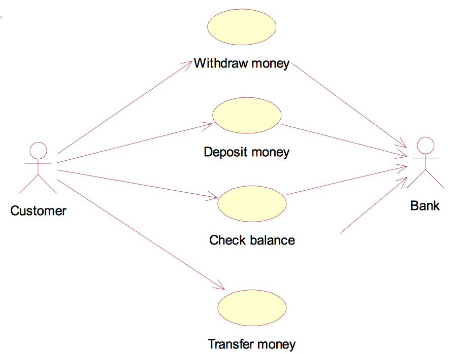

Detailed example: ATM
To illustrate the actor-based approach, let's walk through the approach for an ATM system.
Identify the system boundary
For an ATM, the system boundary is relatively clear: it is the machine itself. So when we create use cases, those use cases should be limited to the functionality of the machine.
Identify the primary actors
Since the ATM is our system boundary, what is outside of that boundary that interacts with the ATM? There are two clear answers: the customer and the bank.
However, because the customer is always the one to initiate interactions with an ATM, the customer is the primary actor. The bank is a passive actor because it is involved in the interactions but never initiates any.
Identify the goals
What goals does a customer have when using an ATM? Two come to mind:
- Check balances of accounts
- Manage money
Identify the use cases
Next, we need to take the goals from the previous step and identify the use cases that can acheive those goals.
We only need one use case to accomplish the Check balances of accounts goal:
However, to accomplish the Manage money goal, we'll need a few use cases:
- Withdraw money
- Deposit money
- Transfer money
Result
With the four-step actor-based approach, we identified the system boundary, two actors, and four use cases. With these identified, we can easily draw the use case diagram as such:
